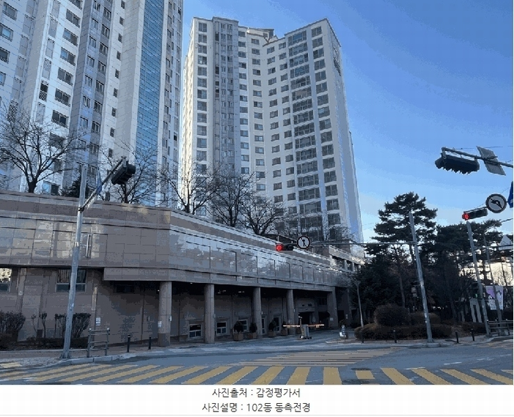
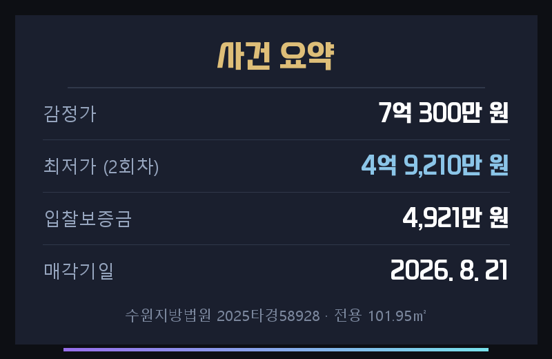
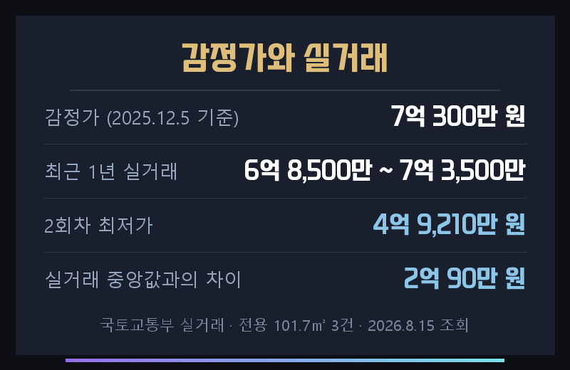
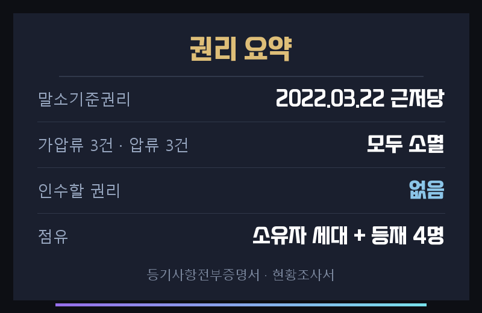
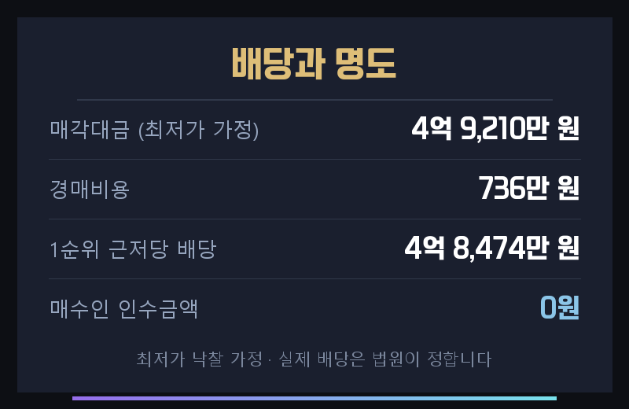
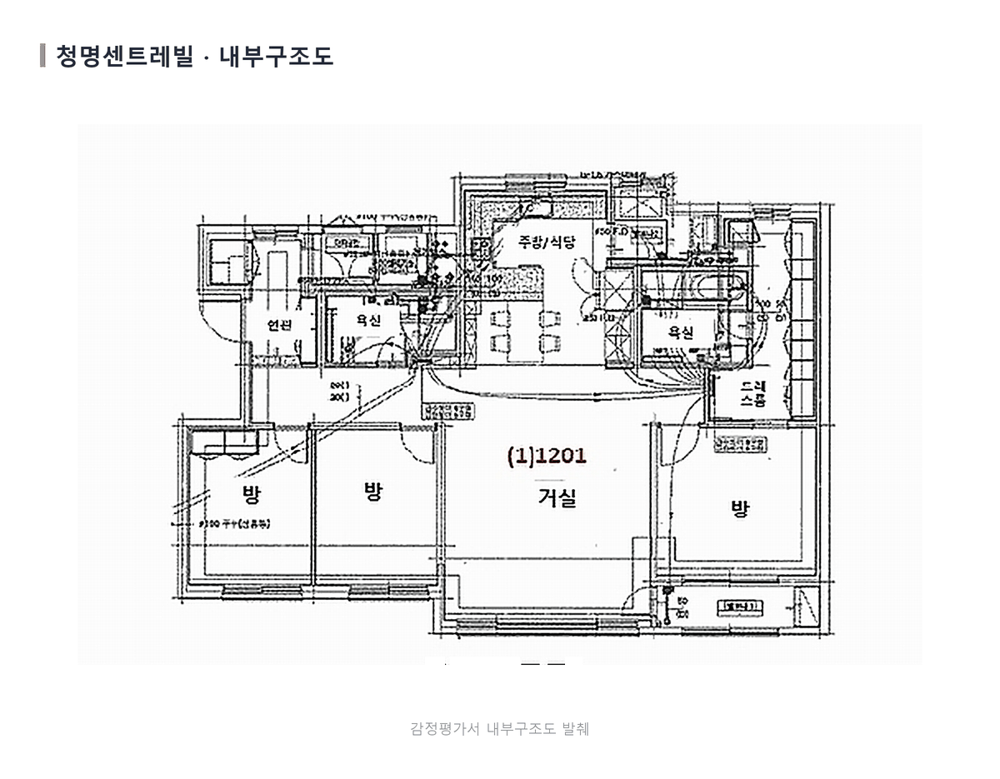
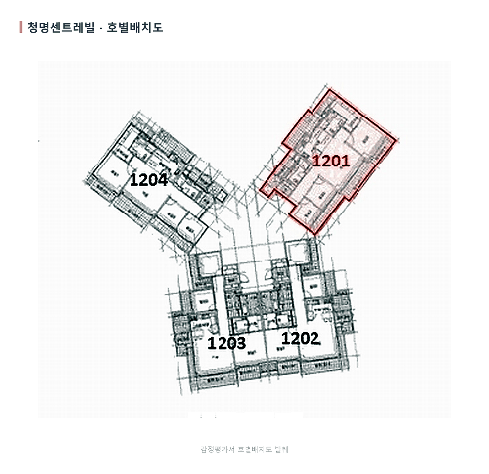
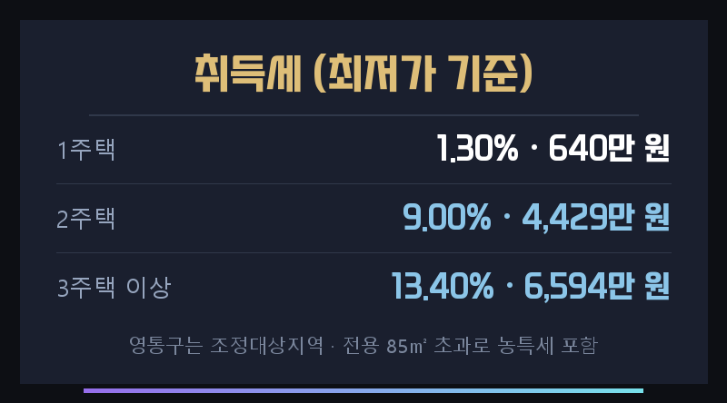
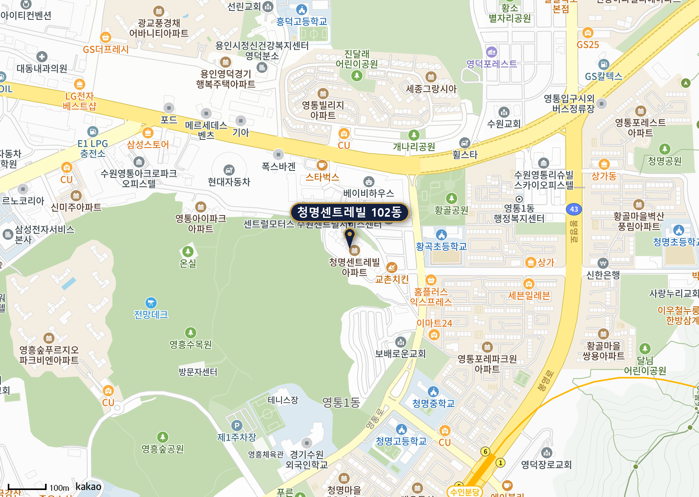

수원지방법원 2025타경58928
수원시 영통구 영통동 청명센트레빌 102동 1201호
전용 101.95㎡ · 공급 39평형
2회차 최저가 4억 9,210만 원

수원 영통구 영통동, 황곡초등학교 서측에 있는 청명센트레빌 102동 1201호가 경매로 나왔습니다. 2013년 6월 사용승인 난 단지이고 전용 101.95㎡, 공급 39평형입니다.
1차는 감정가 그대로 7억 300만 원에 나왔다가 지난 7월 8일 유찰됐습니다. 지금 보시는 4억 9,210만 원이 2회차 최저가로, 감정가의 70% 수준입니다.

| 관할 | 수원지방법원 |
|---|---|
| 소재지 | 경기 수원시 영통구 영통동 1166 청명센트레빌 102동 1201호 |
| 면적 | 전용 101.95㎡ · 대지권 57.28㎡ |
| 사용승인 | 2013년 6월 4일 · 철근콘크리트 |
| 청구금액 | 955,345,935원 |
| 감정 기준시점 | 2025년 12월 5일 |
앞선 사건들과 다른 점이 하나 있습니다. 감정가 7억 300만 원이 최근 1년 실거래 범위 안에 들어와 있습니다. 같은 평형은 2025년 10월 6억 9,300만 원, 2026년 3월 6억 8,500만 원, 2026년 6월 7억 3,500만 원에 거래됐습니다.
감정 기준시점이 2025년 12월 5일이라 최근 시세가 비교적 잘 반영됐습니다. 감정가를 시세로 놓고 봐도 크게 어긋나지 않는 사건이라는 뜻입니다.

차이 금액이 그대로 수익은 아닙니다.
최저가는 입찰을 시작하는 금액이지 낙찰되는 금액이 아닙니다. 취득세와 명도비, 체납관리비에 경쟁 상황까지 고려해서 적정 입찰가를 산출하셔야 합니다.
임대로 돌리실 생각이라면 먼저 아셔야 할 것이 있습니다. 본건 평형은 최근 3년 전세 실거래가 한 건도 없습니다. 확인되는 임대 계약은 2026년 6월 17일 보증금 4억 2,000만 원에 월 40만 원 한 건뿐입니다.
같은 단지에서도 전용 84.9㎡는 전세 거래가 활발합니다. 2026년 3월 4억 3,000만 원부터 5월 5억 4,000만 원까지 최근 반년에만 여러 건이 있습니다. 대형 평형만 전세 수요가 얕습니다.
등기부에서 가장 앞선 담보는 2022년 3월 22일 설정된 채권최고액 9억 2,000만 원의 근저당입니다. 이 근저당이 말소기준권리이고, 경매를 신청한 채권자도 같은 은행입니다.
| 2022.03.22 근저당 | 중소기업은행 9억 2,000만 원 말소기준 · 소멸 |
|---|---|
| 2025.01.16 가압류 | 경기신용보증재단 2,000만 원 · 소멸 |
| 2025.02.27 가압류 | 중소벤처기업진흥공단 1억 2,177만 원 · 소멸 |
| 2025.07.01 가압류 | 신용보증기금 1억 4,771만 원 · 소멸 |
| 압류 3건 | 화성세무서 · 영통구청 · 건강보험공단 · 모두 소멸 |
2025년 이후 붙은 가압류와 압류는 전부 말소기준권리보다 뒤라 매각으로 소멸합니다. 등기부상 낙찰자가 인수할 권리는 없습니다.
신청채권자가 1순위 근저당권자 본인이라는 점은 짚어둘 만합니다. 앞선 권리가 없어 배당받을 몫이 남으므로, 잉여가 없어 경매가 취소될 걱정은 사실상 없습니다.

현황조사서를 그대로 옮기면 이렇습니다. 집행관이 2025년 11월 27일 방문했으나 폐문부재였고, 전입세대확인서에는 채무자 겸 소유자를 세대주로 하는 세대가 전입되어 있으며, 외국인체류확인서에는 그 외 다른 사람들이 전입되어 있어 일단 그들을 임차인으로 등재했다고 적혀 있습니다.
그리고 집행관이 정확한 임대차 내역은 별도의 확인을 요한다고 직접 덧붙였습니다. 등재된 임차인은 4명입니다.
이 사건은 등기보다 점유가 어렵습니다.
등기에서 넘어오는 부담은 없지만, 실제로 누가 살고 있고 어떤 조건인지가 서류로 확정되지 않았습니다. 집행관도 확인이 더 필요하다고 적은 상태입니다. 명도 기간과 비용은 넉넉히 잡으시고, 입찰 전에 전입세대확인서와 현장 점유를 다시 맞춰 보시는 편이 안전합니다.

경매를 신청한 은행의 청구금액은 9억 5,534만 원입니다. 최저가로 낙찰돼도 4억 3,526만 원이 배당되지 않고 남고, 가압류 3건은 배당이 전혀 없습니다.
감정평가서에 실린 내부구조도를 보면 거실을 가운데 두고 방 3개와 욕실 2개가 배치돼 있습니다. 주방과 식당이 한 공간으로 이어지고, 안방 쪽에 드레스룸이 별도로 있습니다.

같은 층 배치를 보면 한 층에 네 세대가 있고, 본 물건은 그중 1201호입니다. 세 방향으로 갈라진 배치라 세대끼리 마주 보지 않습니다.

실제로 드는 돈은 낙찰가에 취득세·명도비·체납관리비를 더한 금액입니다. 여기서 수원 영통구가 조정대상지역이라는 점을 꼭 보셔야 합니다. 2주택부터 취득세가 9%로 뛰기 때문에 보유 주택 수에 따라 실제 부담이 크게 갈립니다.

2007년 허가·2008년 착공해 2013년 6월 사용승인이 난 단지입니다. 대지면적 1만 1,850㎡, 연면적 4만 692㎡ 규모입니다.
현황조사서에는 황곡초등학교 서측에 있고 아파트단지와 근린생활시설·학교·공원이 섞인 주거지역이며, 단지까지 차량 출입이 가능하고 인근에 버스정류장과 수인분당선 청명역이 있다고 적혀 있습니다.

입찰보증금 4,921만 원은 수표로 준비하시는 편이 편합니다. 본인이 가시면 신분증과 도장, 대리인이 가시면 인감증명서·위임장·대리인 신분증·도장이 필요합니다.
등기에서 넘어오는 부담이 없고 감정가도 시세에 가까운, 가격 판단은 비교적 단순한 사건입니다. 대신 점유가 서류로 확정되지 않았다는 점과 이 평형은 전세 수요가 얕다는 점이 실제 부담을 좌우합니다.
적정 입찰가는 경쟁 상황과 보유 주택 수, 대출 한도까지 감안해 사건마다 다르게 산출하셔야 합니다.
THE FIN은 2014년부터 경매 현장에 있었고, 법원 매수신청대리인으로 등록된 중개법인입니다. 권리분석·시세조사·입찰 동행·잔금 대출·명도를 단계마다 담당이 나뉜 팀이 함께 진행하고, 사건별 진행 상황을 한 곳에서 관리하고 있습니다.
이 물건으로 입찰을 생각하고 계시면 매각기일 전에 한 번 연락 주십시오. 점유 확인부터 적정 입찰가까지 함께 정리해 드립니다.
이이사님이 주신 초안과 이 원고가 어디서 갈렸는지 적어 둡니다. 무엇을 고쳤는지 보시고 피드백 주시면 다음 회차에 반영합니다.